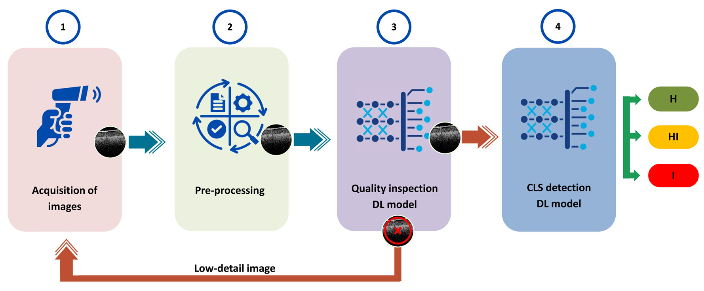
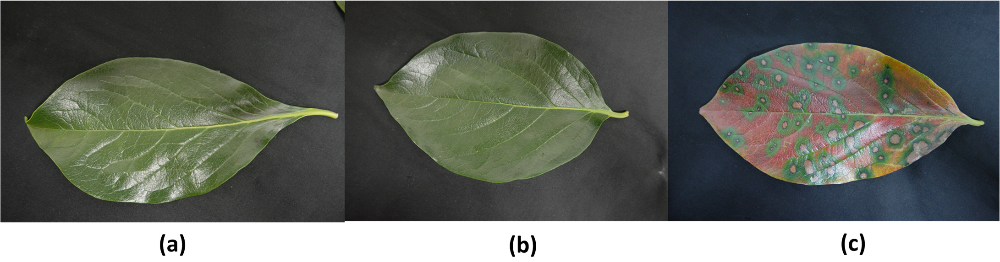
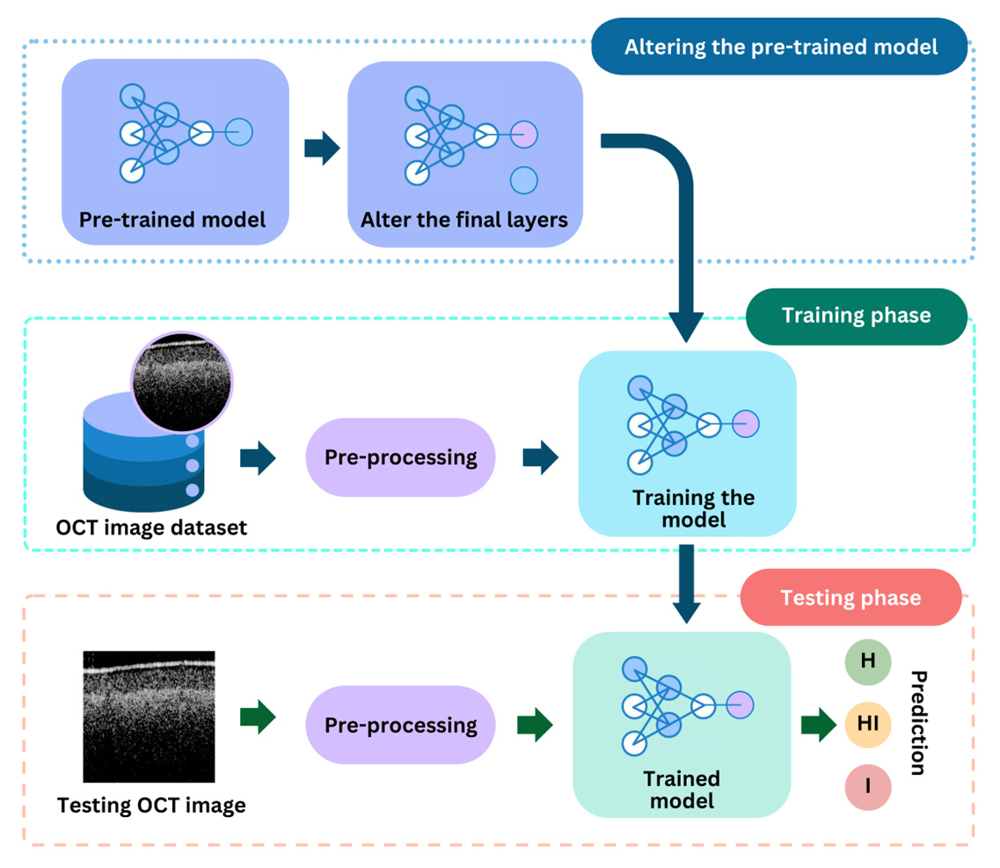
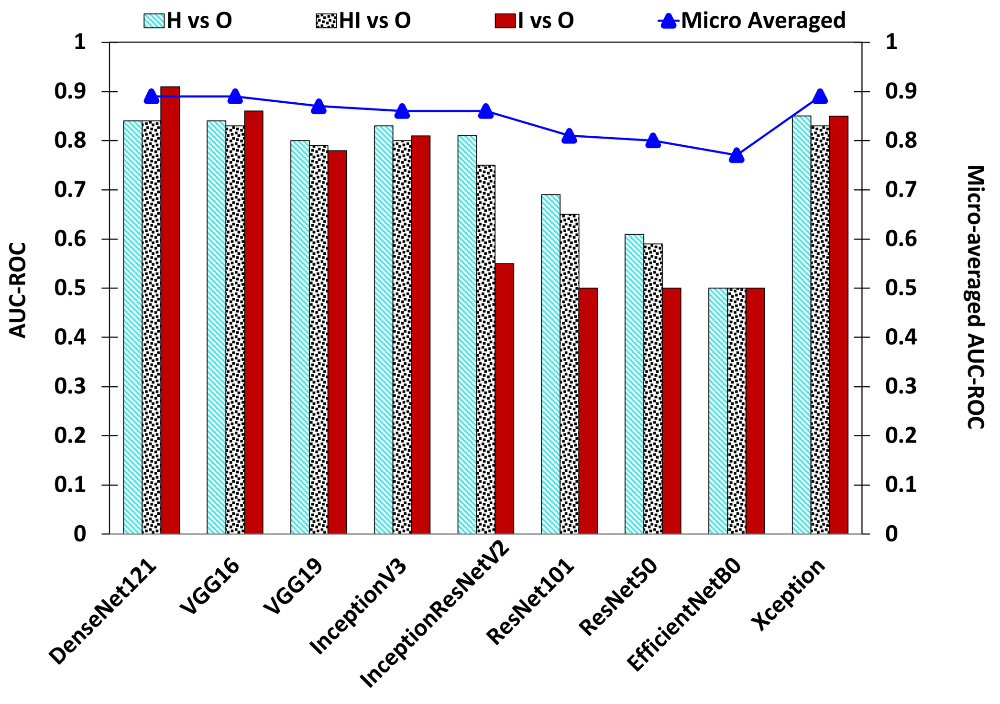
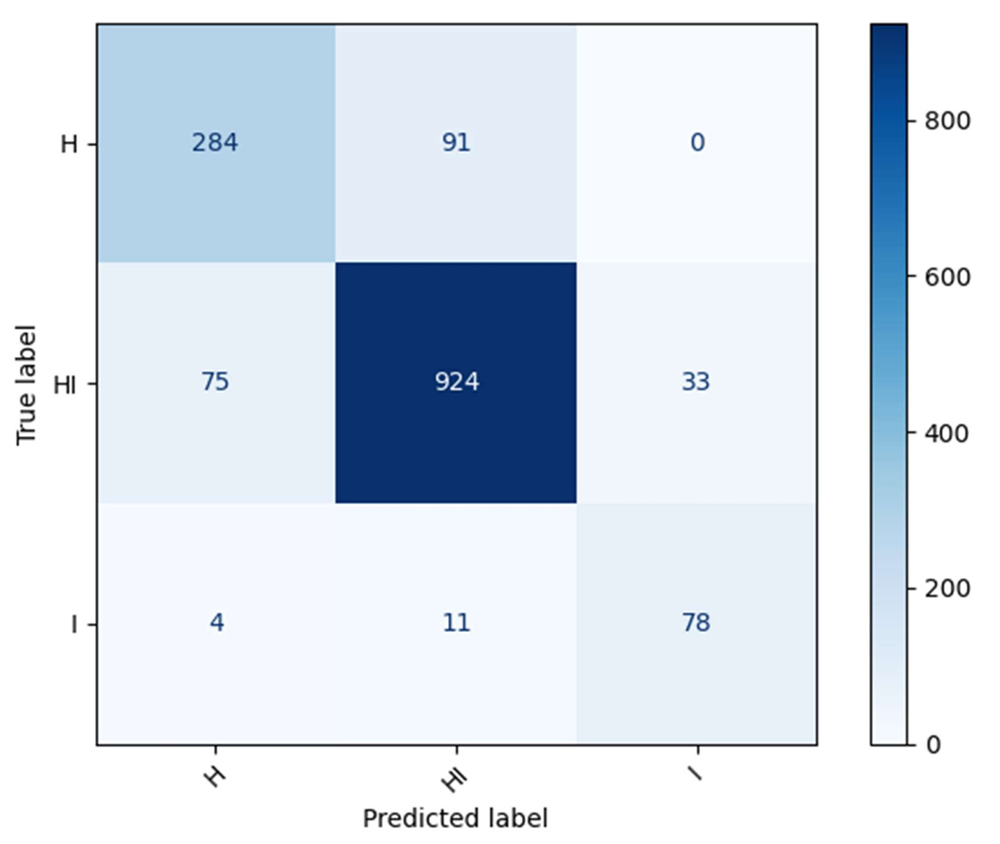

Dense Convolutional Neural Network-Based Deep Learning Pipeline for Pre-Identification of Circular Leaf Spot Disease of Diospyros kaki Leaves Using Optical Coherence Tomography
At a glance
OCT imaging and transfer learning help identify circular leaf spot disease in persimmon leaves before obvious visual symptoms.


Abstract
Circular leaf spot (CLS) disease poses a significant threat to persimmon cultivation, leading to substantial harvest reductions. Existing visual and destructive inspection methods suffer from subjectivity, limited accuracy, and considerable time consumption. This study presents an automated pre-identification method of the disease through a deep learning (DL) based pipeline integrated with optical coherence tomography (OCT), thereby addressing the highlighted issues with the existing methods. The investigation yielded promising outcomes by employing transfer learning with pre-trained DL models, specifically DenseNet-121 and VGG-16. The DenseNet-121 model excels in differentiating among three stages of CLS disease (healthy (H), apparently healthy (or healthy-infected (HI)), and infected (I)). The model achieved precision values of 0.7823 for class-H, 0.9005 for class-HI, and 0.7027 for class-I, supported by recall values of 0.8953 for class-HI and 0.8387 for class-I. Moreover, the performance of CLS detection was enhanced by a supplemental quality inspection model utilizing VGG-16, which attained an accuracy of 98.99% in discriminating between low-detail and high-detail images. Moreover, this study employed a combination of LAMP and A-scan for the dataset labeling process, significantly enhancing the accuracy of the models. Overall, this study underscores the potential of DL techniques integrated with OCT to enhance disease identification processes in agricultural settings, particularly in persimmon cultivation, by offering efficient and objective pre-identification of CLS and enabling early intervention and management strategies.
Approach
A-scan analysis and LAMP testing establish disease labels. An adapted VGG-16 filters image quality; an adapted DenseNet-121 classifies disease stage using transfer learning.

Results & discussion
On the reported test data, image-quality classification achieved 98.99% accuracy. Disease-stage classification achieved 85.73% accuracy and a micro-averaged AUC–ROC of 0.89. Around 10% of apparently healthy infected samples were mistaken for healthy leaves. Limited diversity of noisy images remains a constraint.


Citation
@article{kalupahana2024leafspot,
author = {Kalupahana, D. and Kahatapitiya, N. S. and Silva, B. N. and Kim, J. and Jeon, M. and Wijenayake, U. and Wijesinghe, R. E.},
title = {Dense Convolutional Neural Network-Based Deep Learning Pipeline for Pre-Identification of Circular Leaf Spot Disease of Diospyros kaki Leaves Using Optical Coherence Tomography},
journal = {Sensors},
volume = {24},
number = {16},
pages = {5398},
year = {2024},
doi = {10.3390/s24165398}
}Approach and results summarized from the published paper (Tables 3–4 and discussion). The abstract is reproduced from the paper. Figures reproduced from Kalupahana et al. (2024), © the authors, under CC BY 4.0.